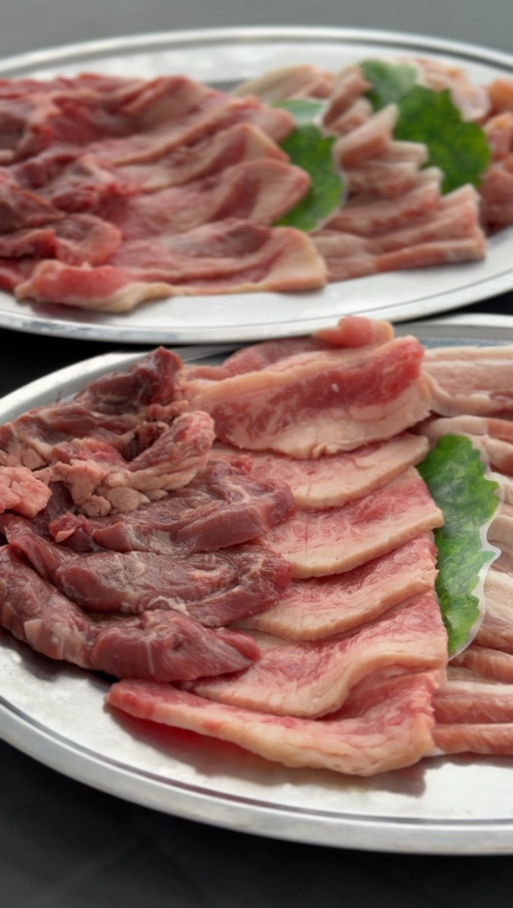

ABOUT
走進海洋，
享受無拘無束的島嶼時光。
眼前是一望無際的蔚藍大海、潔白沙灘與悠閒流淌的島嶼時光。GoGoUmi paradise 是為了讓您盡情體驗興居島自然美景而打造的海邊小屋。
BEACHBeach BBQISLAND TIMESUNSETPET OK
「今天，就出發去島上吧。」
就是這麼簡單。
戲水、品嚐美食、暢飲、暢笑。與摯愛的人或愛犬共度美好的一天，留下最特別的夏日回憶。
THE BEACH
唯有此處才有的
絕美海景。
碧藍海水與細白沙灘。從白天的開闊明朗到傍晚的寧靜夕陽，海面隨時變換著迷人的色彩等待著您。


Beach BBQ
眺望大海，
與好友齊聚BBQ烤肉。
藍天之下、沙灘之畔。圍繞著美味肉品與新鮮時蔬，將日常用餐昇華為一段難忘的島嶼體驗。

FOOD精選肉品・時蔬
SCENE海邊BBQ
SPACE海邊小屋
TIME悠閒島嶼時光


ALSO RECOMMENDED
享用完BBQ後，
來一碗清涼的巴西莓碗。
在海邊盡情暢玩後，稍作休息。在海風吹拂下，品嚐鋪滿豐富水果的清涼巴西莓碗（Acai Bowl）。
ACAI BOWLFRESH FRUITSBEACH TIME
「大海 × BBQ × 巴西莓碗」
讓夏日島嶼假期更添一分奢華愜意。
如果BBQ是GoGoUmi的主角，那巴西莓碗就是最棒的甜蜜驚喜——午餐後或戲水空檔的絕佳點心。

SUNSET TIME
直到夕陽西下，
再多停留片刻。
ACCESS
從松山市區出發，
輕鬆來趟島嶼小旅行。
GoGoUmi paradise 位於日本愛媛縣松山市的興居島。
這是一段比想像中更近、更愜意的海上航程。
從高濱港搭乘渡輪僅需約 10〜15 分鐘！
1
松山市區
開車或搭乘伊予鐵道至高濱站・高濱港
2
高濱港
前往渡輪搭乘處（可開車登船）
3
搭乘渡輪
前往由良港或泊港
約10〜15分鐘
4
抵達興居島！
在 GoGoUmi paradise度過美好的一天
GoGoUmi paradise
興居島海邊小屋 海の虜
地址
〒791-8093 日本愛媛縣松山市泊町 鷲之巢海水浴場
營業時間
11:00〜(餐點最後點餐 16:00) ※建議預約
預約與洽詢
現場負責人（池田）：+81-80-4999-0246
渡輪時刻表
興居島渡輪時刻表 ↗
FAQ
常見問題
為初次造訪的顧客整理的實用資訊與注意事項。
是的，建議您提前預約。歡迎透過 Instagram DM 或致電（+81-80-4999-0246）查詢空位與預訂。
視天氣狀況可能暫停營業。當日最新營業狀況請至 Instagram 限時動態（Stories）確認。
當然可以！BBQ套餐已包含全套烤肉設備與新鮮食材，輕鬆前往即可享受。若要戲水建議自備泳裝與毛巾。
非常歡迎！非常適合全家同樂，大人小孩都能在沙灘戲水、盡情享受BBQ時光。
是的，非常歡迎攜帶寵物！您可以與愛犬在沙灘散步、共度BBQ時光。為維護其他顧客安全與環境，現場請務必繫上牽繩。
是的，海邊小屋旁設有專屬停車空間，開車前來也十分便利。
是的，入園顧客（6歲以上）每人需完成「1杯飲品＋1份餐點」的首點低消（※點購BBQ套餐的顧客僅需完成「1杯飲品」首點）。除桌位費外，您可自由點購BBQ套餐、拉麵、咖哩、烏龍麵或巴西莓碗等豐富餐點。
當然可以！無論是少人數或團體包場、私人聚會等，我們都非常歡迎。歡迎隨時透過 Instagram DM 或電話（+81-80-4999-0246）洽詢預算與細節。
SEE YOU AT THE BEACH
今年夏天，相約興居島。
在海中暢泳、享受BBQ、或只是靜靜放空。無論哪種度假方式，都是最美好的時光。